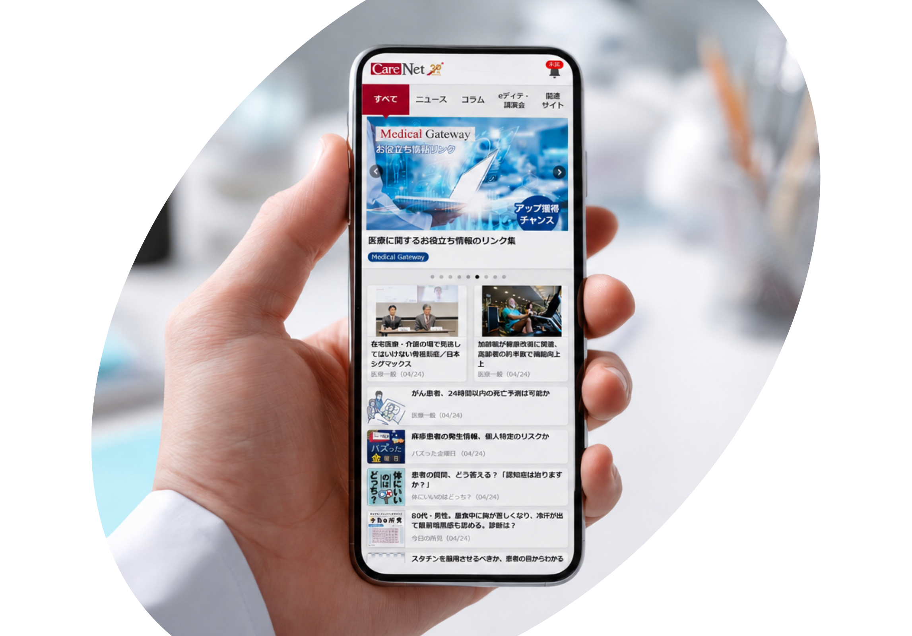
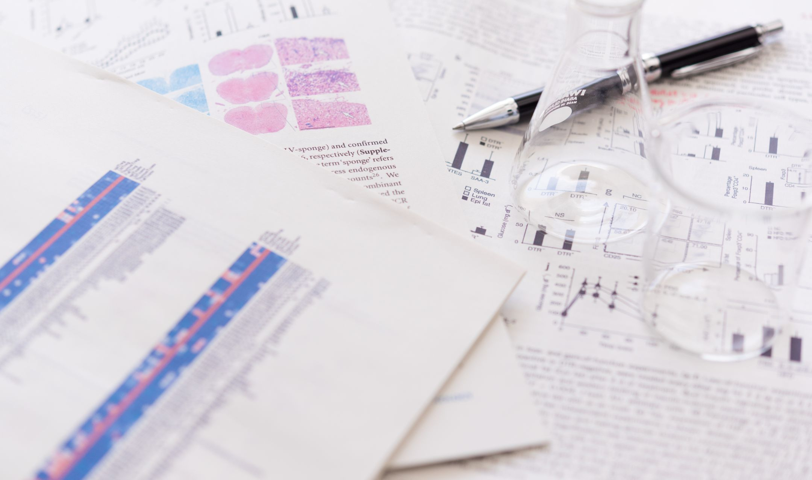

効率的なインプットが、
明日の臨床に生きる。
多忙な先生方の「今知りたい」は、 ケアネットで！
添付文書から最新のWeb講演会まで、
あらゆる医薬情報
へダイレクトにアクセスできます。

日々の臨床で、
CareNet.comが「活用される」
3つの理由
-
国内医師の
「3人に2人」が
使う
安心感国内医師24万人超が登録。
医薬情報収集の「スタンダード」として定着し、多くの先生方が日々の診療のアップデートに活用しています。
-
設立30年が導く、
情報の「最適解」「中立・科学的」な視点と
高度なデータ技術を融合。先生の関心に合わせた情報のパーソナライズで、臨床で真に必要な「厳選された情報」を自ら探す手間なく、効率よくキャッチできます。
-
スキマ時間で
つかむ
「学びの革新」多忙な合間に「短時間でわかる」を
徹底追求。長年の動画制作ノウハウに加え、AIによる記事要約などの最新技術を取り入れ、診療のスキマ時間でも手軽にインプットできる環境を整えています。
潜在的なニーズにも応える、 豊富なコンテンツ
診療の合間に目と耳で要点をつかめる、
実践的なコンテンツ群で
忙しい先生方をサポートします。
医薬品・論文ニュース
世界的なトップジャーナルの速報から、国内のガイドライン改訂、身近な薬剤のリスクまで。
ご自身の専門領域はもちろん、専門外の最新トレンドも含め、
日々の診療をアップデートするための「今、読むべき」ニュースを網羅しています。

eディテーリング
「eディテーリング」のパイオニアが
提供する学習体験
多忙な先生方のために、新薬や適応追加の情報をコンパクトに凝縮。CareNet.comでしか見られない動画・スライドを毎月平均40本以上提供！ スキマ時間のインプットを支援します。
-
「消化器」「肝臓」「血液」「脳神経」など疾
患領域別の特設
ポータル - 最新の診療ガイドライン改訂の要点と、薬剤の位置付け
- 明日からの外来で使える実践的なTips
Web講演会
年間200回以上開催。
臨床の最前線をライブで
各領域の著名医師による講演が、自宅や医局で視聴可能。理解が深まる視聴者参加型の講演会もあり、視聴完了率90％以上と好評です。
- 実臨床やマネジメントの課題解決
- 最新エビデンスと新薬の深掘り
-
専門外の最新トレンドまで抑えるための
実地医家向け解説
新機能
薬剤情報プラットフォーム
「DI Plus」
添付文書も、臨床成績も、動画解説も。
必要な情報が1ページに。
-
基本DI情報
必須情報へ、検索なしで
ダイレクトアクセス電子添文（添付文書）、インタビューフォーム、RMP（医薬品リスク管理計画）などの必須情報を網羅。複数のサイトを検索して回る手間を省き、必要な瞬間にすぐ確認できます。
-
製薬企業提供の情報（動画・図解）
薬剤の特徴を、「視覚」で直感的に把握
文字だけではつかみにくい作用機序や臨床成績を、製薬企業作成の「動画」や「図解」で解説。複雑な薬剤情報も視覚的に短時間で理解でき、多忙な診療の合間に最適です。医療用医薬品検索も完備。
学習の継続をサポートする アップ・ポイント制度
「ついで」の利用が、大きなメリットに
日々の情報収集アクションが、
実用的な特典として還元されます。
-
学習完了で
アップ（up）獲得 -

たまったアップは
ポイントに交換
-

Amazonギフトカードや
医学書の購入にも利用可能※Amazon、Amazon.co.jp およびそれらのロゴはAmazon.com, Inc.またはその関連会社の商標です。
臨床の最前線から届いた 信頼の声
-
専門外の知見も得られる医療情報源
幅広い医療情報がまとまっていて、日々の総合的な情報収集に重宝しています。特にWeb講演会は、専門外や他科の新しい知見も得られて勉強になります。
-
忙しい医師を支える効率的な情報収集
eディテーリングで、短時間の動画でサクッと要点をつかめます。忙しい診療の合間でも、有益な情報が効率よく得られるのが良いですね。
-
実臨床に活かせる薬剤情報
薬剤情報が非常に充実しており、各薬剤の特長や新薬の情報収集に役立っています。情報が簡潔で見やすいため、実臨床ですぐに活かせます。
-
医学知識を手軽にアップデート
タイムリーな医事ニュースや最新論文の解説が豊富で、医学知識のアップデートに最適です。パッと見て分かりやすいので、空き時間に重宝しています。
-
勉強とポイ活を両立できる情報源
学習動画の視聴やアンケートでポイントが貯まりやすく、勉強しながらポイ活もできる有能なサイトです。貯まったポイントで有料動画を見られるのも嬉しいですね。
-
専門外の知見も得られる医療情報源
幅広い医療情報がまとまっていて、日々の総合的な情報収集に重宝しています。特にWeb講演会は、専門外や他科の新しい知見も得られて勉強になります。
-
忙しい医師を支える効率的な情報収集
eディテーリングで、短時間の動画でサクッと要点をつかめます。忙しい診療の合間でも、有益な情報が効率よく得られるのが良いですね。
-
実臨床に活かせる薬剤情報
薬剤情報が非常に充実しており、各薬剤の特長や新薬の情報収集に役立っています。情報が簡潔で見やすいため、実臨床ですぐに活かせます。
-
医学知識を手軽にアップデート
タイムリーな医事ニュースや最新論文の解説が豊富で、医学知識のアップデートに最適です。パッと見て分かりやすいので、空き時間に重宝しています。
-
勉強とポイ活を両立できる情報源
学習動画の視聴やアンケートでポイントが貯まりやすく、勉強しながらポイ活もできる有能なサイトです。貯まったポイントで有料動画を見られるのも嬉しいですね。
-
専門外の知見も得られる医療情報源
幅広い医療情報がまとまっていて、日々の総合的な情報収集に重宝しています。特にWeb講演会は、専門外や他科の新しい知見も得られて勉強になります。
-
忙しい医師を支える効率的な情報収集
eディテーリングが便利で、短時間の動画でサクッと要点をつかめます。忙しい診療の合間でも、有益な情報が効率よく得られるのが良いですね。
-
実臨床に活かせる薬剤情報
薬剤情報が非常に充実しており、各薬剤の特長や新薬の情報収集に役立っています。情報が簡潔で見やすいため、実臨床ですぐに活かせます。
-
医学知識を手軽にアップデート
タイムリーな医事ニュースや最新論文の解説が豊富で、医学知識のアップデートに最適です。パッと見て分かりやすいので、空き時間に重宝しています。
-
勉強とポイ活を両立できる情報源
学習動画の視聴やアンケートでポイントが貯まりやすく、勉強しながらポイ活もできる有能なサイトです。貯まったポイントで有料動画を見られるのも嬉しいですね。
ケアネットとは
知と情熱と行動力で、医療人を支え、医療の未来を動かす。
ケアネットは、設立から30年にわたり医師の「臨床」と「教育」を支援し続けてきました。
現在はその強固な医療従事者向けプラットフォームを基盤に、医療の人材・教育・経営関連の事業から、新薬の開発・治験・普及を支援する事業まで、医療・医薬分野の専門サービスを幅広く展開しています。
多角的な視点と確かな情報力で、先生方の診療とキャリア、そして明日の医療を包括的にサポートします。